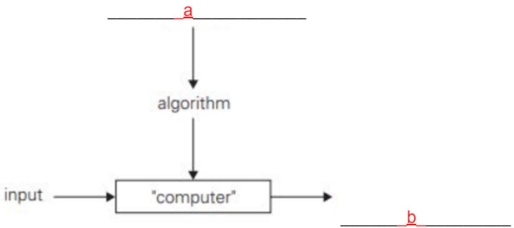
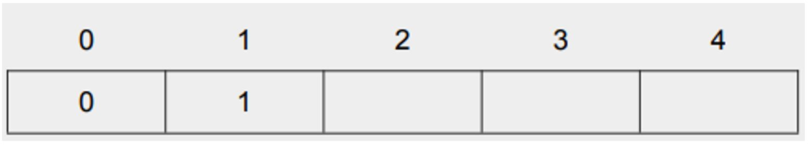
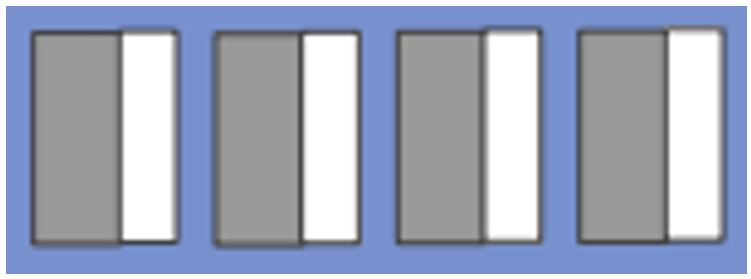
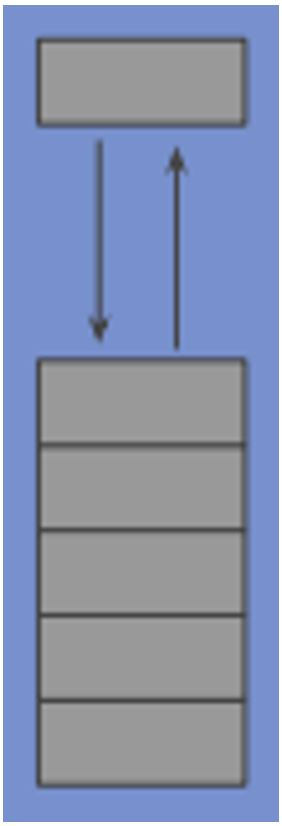
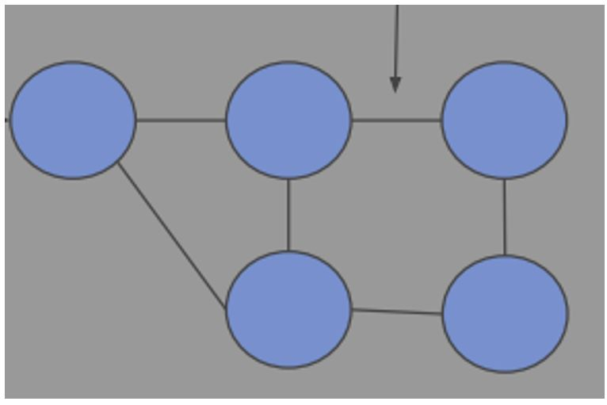
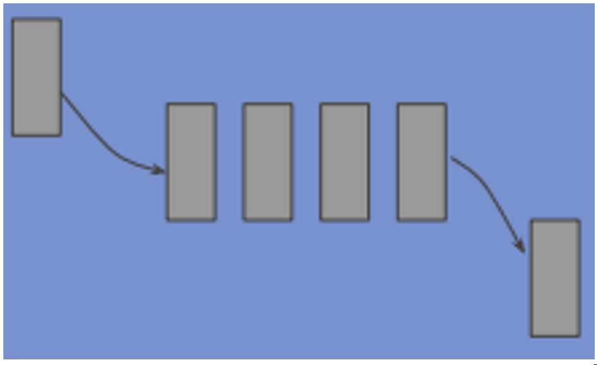
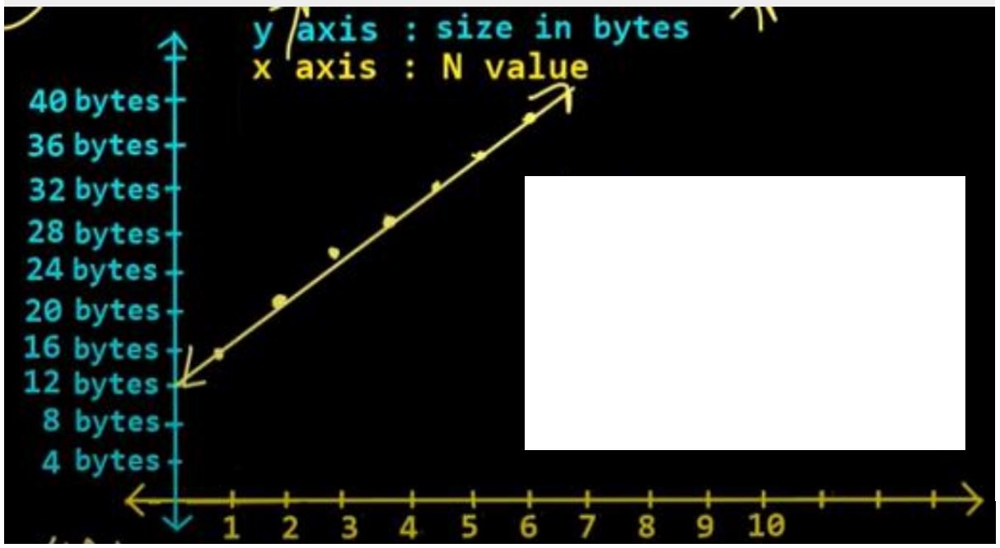

| Question 1 |
Which of the following is a primary data type? |
- A) INTEGER
- B) ARRAY
- C) LIST
- D) STACK
|
| Question 2 |
Binary Search Algorithm is when |
- A) algorithms are specifically designed for searching in sorted data-structures
- B) the list of array is traversed sequentially and every element is checked
- C) the algorithm searches a sorted array by repeatedly dividing the search intervals in half
- D) the search occurs in zeros and ones
|
| Question 3 |
Using binary search in this sorted array:
|
4 5 6 10 54 78
|
|
How many comparisons would it take to find the number 4?
|
|
|
| Question 4 |
What is the first change that INSERTION SORT would make to this sequence?
|
- A) 7 2 5 13
- B) 2 7 13 5
- C) 2 7 5 13
- D) 2 5 7 13
|
| Question 5 |
What is the second change that SELECTION SORT would make to the following sequence?
|
- A) 11 25 12 22 64
- B) 11 12 25 22 64
- C) 11 12 22 64 25
- D) 11 12 22 25 64
|
| Question 6 |
Label the parts "a" and "b" of the diagram on the right; |
 |
| Question 7 |
Refer to the table on the right. If the Fibonacci series generates the subsequent number by adding two previous numbers, which three numbers would go into the respective spaces in the table to complete the series? |

|
| Question 8 |
Label the data structures represented by the images; |
- A) 
- B) 
- C) 
- D) 
|
| Question 9 |
What does the diagram on the right represent in terms of space. |
 |
| Question 10 |
Here is an array of ten integers:
5 3 8 9 1 7 0 2 6 4
List this array after the THIRD iteration of the large loop in a SELECTION SORT(sorting from smallest to largest).
|
_____________________________________________
|
| Question 11 |
Algorithm processes can be represented using flow charts. Which shape represents a decision in a flow chart? |
_________________________________ |
| Question 12 |
Define the six characteristics of algorithms |
- A) FINITENESS -
- B) FEASIBILITY -
- C) INDEPENDENT -
- D) INPUT -
- E) OUTPUT -
- F) UNAMBIGUOUS -
|
| Question 13 |
Name the two categories of search algorithms and briefly describe each. |
- 1) _________________________________
- 2) _________________________________
|
| Question 14 |
For any algorithm, memory is required for three purposes, what are these three purposes?
|
- PURPOSE 1 -
- PURPOSE 2 -
- PURPOSE 3 -
|
| Question 15 |
What is Asymptotic Algorithm analysis?
|
_________________________________
|